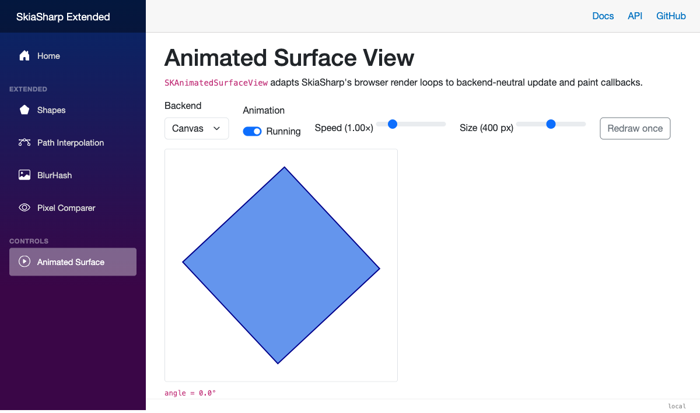
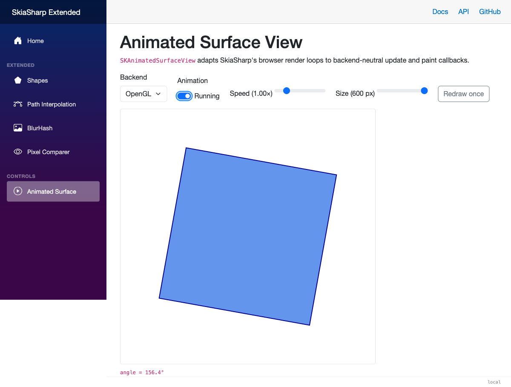

Surface Views
SKSurfaceView
is the common Canvas/OpenGL host for the Blazor controls. It draws on demand;
SKAnimatedSurfaceView
inherits it to connect update and drawing callbacks to the browser's
animation-frame loop.

On-demand drawing
Install the package:
dotnet add package SkiaSharp.Extended.UI.Blazor
Import the namespaces in _Imports.razor:
@using SkiaSharp
@using SkiaSharp.Views.Blazor
@using SkiaSharp.Extended.UI.Blazor.Controls
Use SKSurfaceView when a page only needs explicit redraws. It selects and
validates SKCanvasView or SKGLView, forwards canvas attributes, and exposes
the same synchronous paint callback as its animated subclass:
<SKSurfaceView @ref="surface"
OnPaintSurface="Paint"
style="width: 400px; height: 300px;" />
@code {
private SKSurfaceView? surface;
private void Paint(SKCanvas canvas, SKSize size) => canvas.Clear(SKColors.CornflowerBlue);
private void Redraw() => surface?.Invalidate();
}
Animation loop
Use SKAnimatedSurfaceView when a Blazor page needs a SkiaSharp scene that
moves smoothly without maintaining a separate timer. OnUpdate runs
immediately before OnPaintSurface for every animated frame.
<SKAnimatedSurfaceView OnUpdate="Update"
OnPaintSurface="Paint"
style="width: 400px; height: 300px;" />
@code {
private float angle;
private void Update(TimeSpan delta)
{
angle = (angle + (float)(delta.TotalSeconds * 90)) % 360;
}
private void Paint(SKCanvas canvas, SKSize size)
{
canvas.Clear(SKColors.White);
canvas.Translate(size.Width / 2, size.Height / 2);
canvas.RotateDegrees(angle);
using var paint = new SKPaint { Color = SKColors.CornflowerBlue, IsAntialias = true };
canvas.DrawRect(-50, -50, 100, 100, paint);
}
}
Canvas and OpenGL
The component renders an SKCanvasView by default. Set SurfaceType to
SKGLView for GPU rendering. The selected type can also be a custom component
derived from either supported view.
<SKAnimatedSurfaceView SurfaceType="@typeof(SKGLView)"
IgnorePixelScaling="true"
OnPaintSurface="Paint"
style="width: 400px; height: 300px;" />
The component validates the type and wires the matching native paint callback.
It does not automatically fall back when OpenGL is unavailable.
IgnorePixelScaling is forwarded to the underlying SkiaSharp view. Additional
attributes such as class, id, and style are forwarded to its canvas.

Pausing and on-demand redraws
Set IsAnimationEnabled to pause updates and browser-driven repainting. A
paused component can still draw a changed scene when you call Invalidate().
The first update after creating, resuming, or replacing the surface receives a
zero delta so paused time is not added to the animation. Its timing is shared
with the .NET MAUI animated surface, using a monotonic clock and a rolling
frame-rate calculation.
<button @onclick="ToggleAnimation">@(isPlaying ? "Pause" : "Play")</button>
<button @onclick="animatedSurface?.Invalidate()">Redraw once</button>
<SKAnimatedSurfaceView @ref="animatedSurface"
IsAnimationEnabled="isPlaying"
OnPaintSurface="Paint"
style="width: 400px; height: 300px;" />
@code {
private SKAnimatedSurfaceView? animatedSurface;
private bool isPlaying = true;
private void ToggleAnimation() => isPlaying = !isPlaying;
}
Development diagnostics
DEBUG builds draw a small FPS label after your OnPaintSurface callback. It
works with both Canvas and OpenGL surfaces, does not trigger component renders,
and is omitted entirely from release builds.